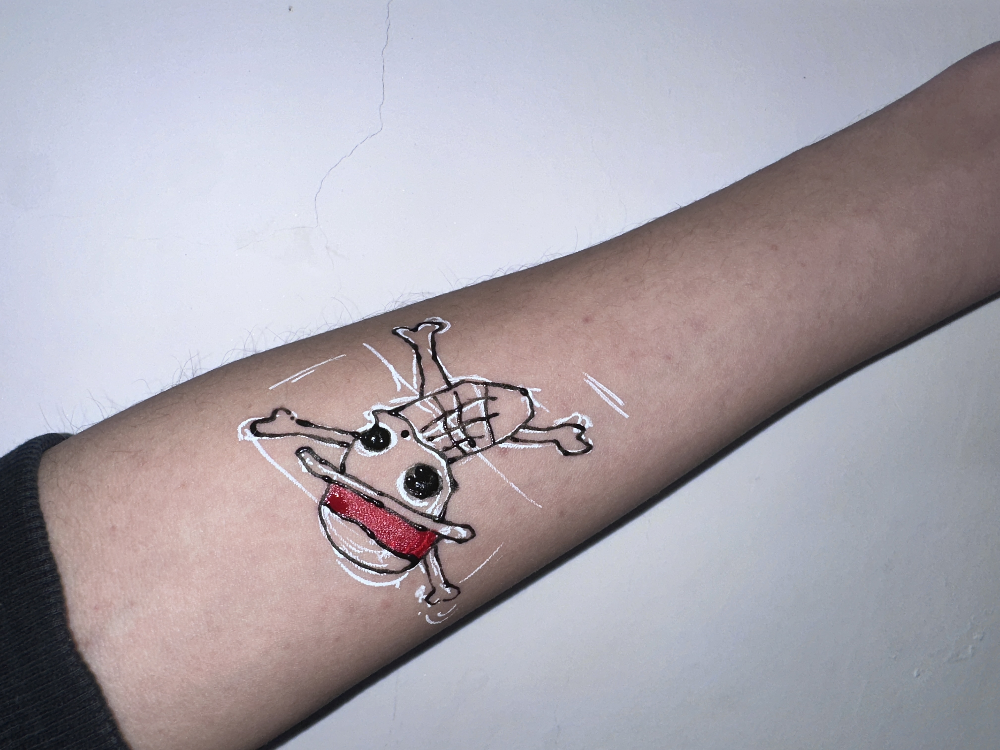
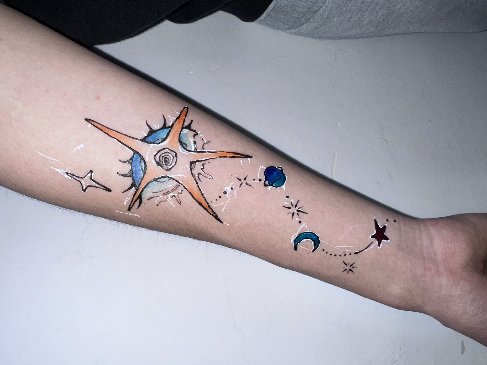
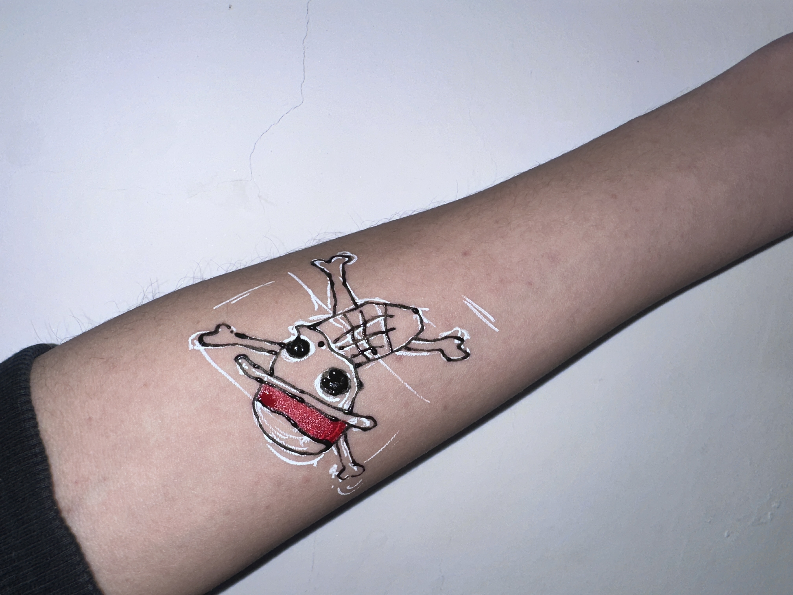
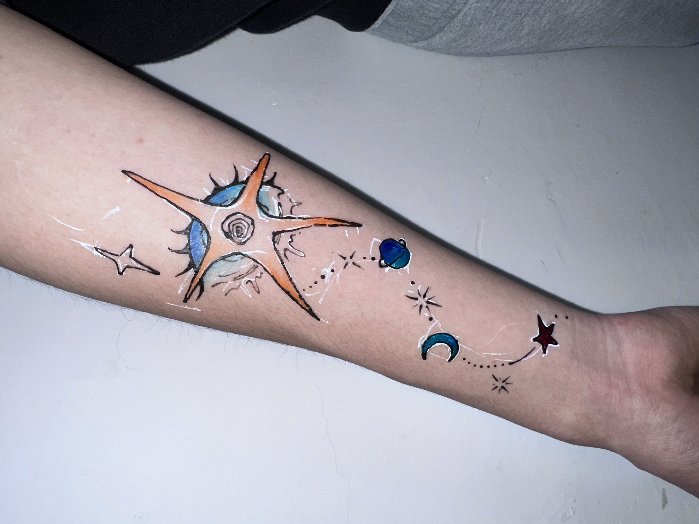

Design Works
DOEAST Thread Brand Refresh
2025.09–11
Overall brand refresh design for Zhejiang DOEAST Sewing Thread, including visual elements, marketing planning and video design.
Read More →
Japanese Design
2025.08
Created book layouts based on the study of Japanese museums, art galleries and design works.
Read More →RISO Printing
2025.07
Designed a graphic poster for RIIZE member Eunseсто and produced physical prints using RISO printing techniques.
Read More →Film & Video Design
2025.03–06
Selected the climax scene from the film *Batman* and created storyboards based on perspective and light/shadow techniques.
Read More →
Traditional Patterns
2024.09–11
Conducted detailed gouache freehand creations around four themes, inspired by the study of traditional Chinese patterns.
Read More →Creative Morphology
2024.09–11
Unreservedly expressed insights into the world, painful emotions and intense love in the sketchbook.
Read More →
Spatial Composition
2024.03–06
Drew inspiration from all things in daily life, and understood spatial expression through sketches and model making.
Read More →

 


